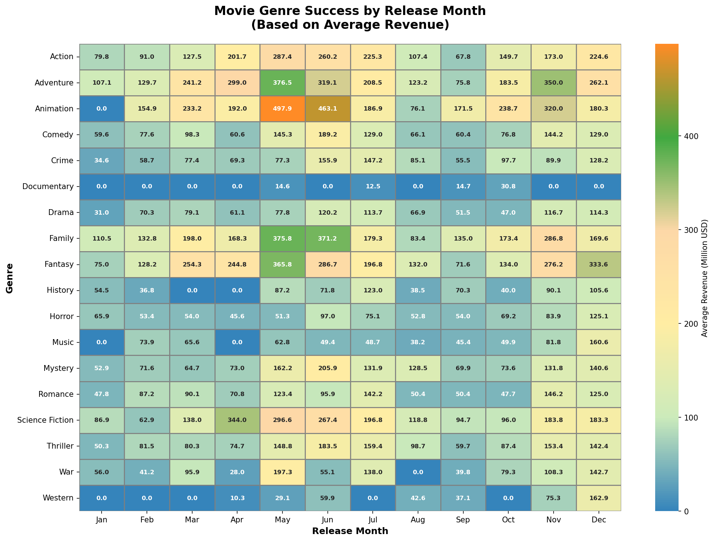

An Analysis of the TMDB 5000 Movie Dataset
The box office for cinemas brings in hundreds of millions of dollars of investment before a movie ever reaches audiences. Some fields profit in such large amounts while others crash and burn. This leads to the question, what factors influence a movie’s box office performance? The success of a movie depends on many interconnected factors such as budgets, timing, audience reception and actor popularity. In this project, we explore open data from IMDb and The Movie Database (TMDb) to interact with different variables such as genre, release month, and viewer ratings to explore the financial performance of a film. Through data analysis and visualization, we aim to uncover which factors influence and strongly predict box office success and if certain patterns emerge or consistently outperform others.
This project analyzes the TMDB (The Movie Database) dataset, which contains comprehensive information on movies released between 1990 and 2017. The dataset comprises approximately 10,000 movie entries with attributes including: production budget (in USD), worldwide revenue, genre classifications (19 distinct genres including Action, Adventure, Drama, Comedy, etc.), release dates, production companies, runtime, original language, production countries, vote averages (ratings on a 1-10 scale), and vote counts. Each movie entry can have multiple genres and production companies, creating a complex network of relationships. The financial data ranges from small independent films with budgets under $1 million to major blockbusters exceeding $300 million, while revenue figures span from minimal returns to billions in global box office. Geographic data covers over 50 production countries, with representation from North America, Europe, and Asia.
The TMDB 5000 Movie Dataset contains information about approximately 5,000 movies from The Movie Database (TMDb). The dataset includes:
After cleaning the data, we ended up with 3,379 movies that had complete information we could analyze. We started by fixing the release dates and removing any movies with invalid dates. From these dates, we extracted the month and year so we could look at seasonal patterns. We removed all movies that had zero revenue or missing revenue data since we needed real financial numbers for our analysis. The genres data came in a messy format, so we had to parse it and create separate rows for movies with multiple genres - for example, if a movie was both "Action" and "Adventure," it would appear twice in our data, once for each genre. After cleaning, we found 19 different genres in total: Action, Adventure, Animation, Comedy, Crime, Documentary, Drama, Family, Fantasy, Foreign, History, Horror, Music, Mystery, Romance, Science Fiction, Thriller, War, and Western. This cleaned dataset gave us everything we needed to analyze how different factors affect movie success.

Interactive D3.js visualization showing genre trends from 1990 to 2017.